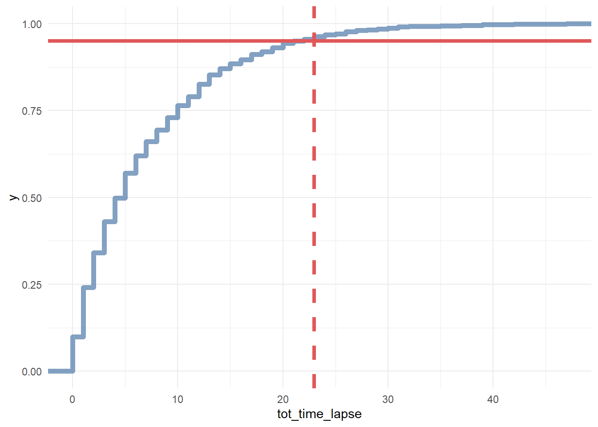
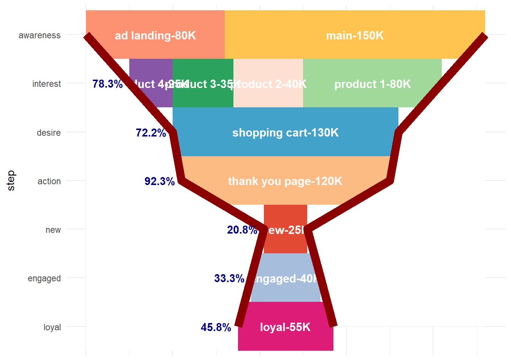
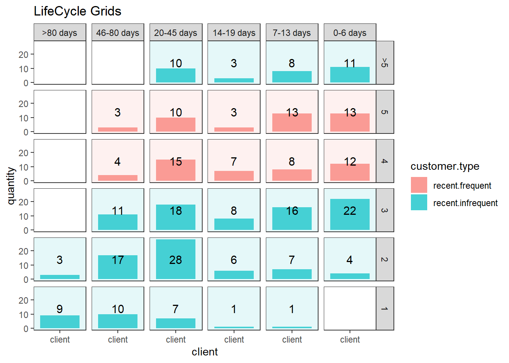
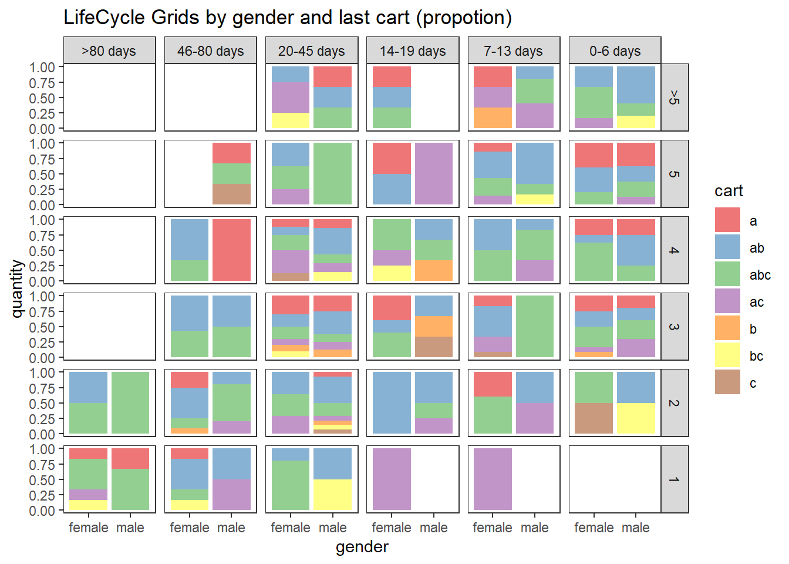
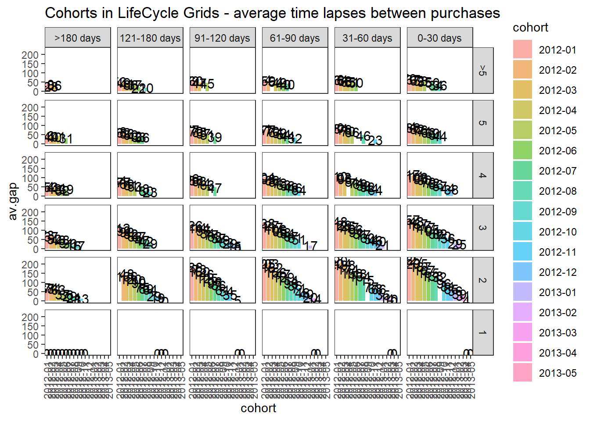

Chapter 13 Models
Marketing models consists of
- Analytical Model: pure mathematical-based research
- Empirical Model: data analysis.
“A model is a representation of the most important elements of a perceived real-world system”.
Marketing model improves decision-making
- Econometric models
- Description
- Prediction
- Simulation
- Description
- Optimization models
- maximize profit using market response model, cost functions, or any constraints.
- maximize profit using market response model, cost functions, or any constraints.
- Quasi- and Field experimental analyses
- Conjoint Choice Experiments.
“A decision calculus will be defined as a model-based set of procedures for processing data and judgments to assist a manager in his decision making”(Little 1976):
- simple
- robust
- easy to control
- adaptive
- as complete as possible
- easy to communicate with.
13.1 Attribution Models
13.1.1 Markov Model
Markov chains maps the movement and gives a probability distribution, for moving from one state to another state. A Markov Chain has three properties:
- State space – set of all the states in which process could potentially exist
- Transition operator –the probability of moving from one state to other state
- Current state probability distribution – probability distribution of being in any one of the states at the start of the process
In mathematically sense
\[ w_{ij}= P(X_t = s_j|X_{t-1}=s_i),0 \le w_{ij} \le 1, \sum_{j=1}^N w_{ij} =1 \forall i \] where
- The Transition Probability (\(w_{ij}\)) = The Probability of the Previous State ( \(X_{t-1}\)) Given the Current State (\(X_t\))
- The Transition Probability (\(w_{ij}\)) is No Less Than 0 and No Greater Than 1
- The Sum of the Transition Probabilities Equals 1 (i.e., Everyone Must Go Somewhere)
To examine a particular node in the Markov graph, we use removal effect (\(s_i\)) to see its contribution to a conversion. In another word, the Removal Effect is the probability of converting when a step is completely removed; all sequences that had to go through that step are now sent directly to the null node
Each node is called transition states
The probability of moving from one channel to another channel is called transition probability.
first-order or “memory-free” Markov graph is called “memory-free” because the probability of reaching one state depends only on the previous state visited.
- Order 0: Do not care about where the you came from or what step the you are on, only the probability of going to any state.
- Order 1: Looks back zero steps. You are currently at a state. The probability of going anywhere is based on being at that step.
- Order 2: Looks back one step. You came from state A and are currently at state B. The probability of going anywhere is based on where you were and where you are.
- Order 3: Looks back two steps. You came from state A after state B and are currently at state C. The probability of going anywhere is based on where you were and where you are.
- Order 4: Looks back three steps. You came from state A after B after C and are currently at state D. The probability of going anywhere is based on where you were and where you are.
13.1.1.1 Example 1
This section is by Analytics Vidhya
# #Install the libraries
# install.packages("ChannelAttribution")
# install.packages("ggplot2")
# install.packages("reshape")
# install.packages("dplyr")
# install.packages("plyr")
# install.packages("reshape2")
# install.packages("markovchain")
# install.packages("plotly")
#Load the libraries
library("ChannelAttribution")
library("ggplot2")
library("reshape")
library("dplyr")
library("plyr")
library("reshape2")
library("markovchain")
library("plotly")
#Read the data into R
channel = read.csv("images/Channel_attribution.csv", header = T) %>% select(-c(Output))
head(channel)## R05A.01 R05A.02 R05A.03 R05A.04 R05A.05 R05A.06 R05A.07 R05A.08 R05A.09
## 1 16 4 3 5 10 8 6 8 13
## 2 2 1 9 10 1 4 3 21 NA
## 3 9 13 20 16 15 21 NA NA NA
## 4 8 15 20 21 NA NA NA NA NA
## 5 16 9 13 20 21 NA NA NA NA
## 6 1 11 8 4 9 21 NA NA NA
## R05A.10 R05A.11 R05A.12 R05A.13 R05A.14 R05A.15 R05A.16 R05A.17 R05A.18
## 1 20 21 NA NA NA NA NA NA NA
## 2 NA NA NA NA NA NA NA NA NA
## 3 NA NA NA NA NA NA NA NA NA
## 4 NA NA NA NA NA NA NA NA NA
## 5 NA NA NA NA NA NA NA NA NA
## 6 NA NA NA NA NA NA NA NA NA
## R05A.19 R05A.20
## 1 NA NA
## 2 NA NA
## 3 NA NA
## 4 NA NA
## 5 NA NA
## 6 NA NAThe number represents:
- 1-19 are various channels
- 20 – customer has decided which device to buy;
- 21 – customer has made the final purchase, and;
- 22 – customer hasn’t decided yet.
Pre-processing
for (row in 1:nrow(channel)){
if (21 %in% channel[row,]){
channel$convert = 1
}
}
column = colnames(channel)
channel$path = do.call(paste, c(channel, sep = " > "))
head(channel$path)## [1] "16 > 4 > 3 > 5 > 10 > 8 > 6 > 8 > 13 > 20 > 21 > NA > NA > NA > NA > NA > NA > NA > NA > NA > 1"
## [2] "2 > 1 > 9 > 10 > 1 > 4 > 3 > 21 > NA > NA > NA > NA > NA > NA > NA > NA > NA > NA > NA > NA > 1"
## [3] "9 > 13 > 20 > 16 > 15 > 21 > NA > NA > NA > NA > NA > NA > NA > NA > NA > NA > NA > NA > NA > NA > 1"
## [4] "8 > 15 > 20 > 21 > NA > NA > NA > NA > NA > NA > NA > NA > NA > NA > NA > NA > NA > NA > NA > NA > 1"
## [5] "16 > 9 > 13 > 20 > 21 > NA > NA > NA > NA > NA > NA > NA > NA > NA > NA > NA > NA > NA > NA > NA > 1"
## [6] "1 > 11 > 8 > 4 > 9 > 21 > NA > NA > NA > NA > NA > NA > NA > NA > NA > NA > NA > NA > NA > NA > 1"for(row in 1:nrow(channel)){
channel$path[row] = strsplit(channel$path[row], " > 21")[[1]][1]
}
channel_fin = channel[,c(22,21)]
channel_fin = ddply(channel_fin,~path,summarise, conversion= sum(convert))
head(channel_fin)## path conversion
## 1 1 > 1 > 1 > 20 1
## 2 1 > 1 > 12 > 12 1
## 3 1 > 1 > 14 > 13 > 12 > 20 1
## 4 1 > 1 > 3 > 13 > 3 > 20 1
## 5 1 > 1 > 3 > 17 > 17 1
## 6 1 > 1 > 6 > 1 > 12 > 20 > 12 1## path conversion
## 1 1 > 1 > 1 > 20 1
## 2 1 > 1 > 12 > 12 1
## 3 1 > 1 > 14 > 13 > 12 > 20 1
## 4 1 > 1 > 3 > 13 > 3 > 20 1
## 5 1 > 1 > 3 > 17 > 17 1
## 6 1 > 1 > 6 > 1 > 12 > 20 > 12 1heuristic model
## channel_name first_touch_conversions first_touch_value
## 1 1 130 130
## 2 20 0 0
## 3 12 75 75
## 4 14 34 34
## 5 13 320 320
## 6 3 168 168
## 7 17 31 31
## 8 6 50 50
## 9 8 56 56
## 10 10 547 547
## 11 11 66 66
## 12 16 111 111
## 13 2 199 199
## 14 4 231 231
## 15 7 26 26
## 16 5 62 62
## 17 9 250 250
## 18 15 22 22
## 19 18 4 4
## 20 19 10 10
## last_touch_conversions last_touch_value linear_touch_conversions
## 1 18 18 73.773661
## 2 1701 1701 473.998171
## 3 23 23 76.127863
## 4 25 25 56.335744
## 5 76 76 204.039552
## 6 21 21 117.609677
## 7 47 47 76.583847
## 8 20 20 54.707124
## 9 17 17 53.677862
## 10 42 42 211.822393
## 11 33 33 107.109048
## 12 95 95 156.049086
## 13 18 18 94.111668
## 14 88 88 250.784033
## 15 15 15 33.435991
## 16 23 23 74.900402
## 17 71 71 194.071690
## 18 47 47 65.159225
## 19 2 2 5.026587
## 20 10 10 12.676375
## linear_touch_value
## 1 73.773661
## 2 473.998171
## 3 76.127863
## 4 56.335744
## 5 204.039552
## 6 117.609677
## 7 76.583847
## 8 54.707124
## 9 53.677862
## 10 211.822393
## 11 107.109048
## 12 156.049086
## 13 94.111668
## 14 250.784033
## 15 33.435991
## 16 74.900402
## 17 194.071690
## 18 65.159225
## 19 5.026587
## 20 12.676375First Touch Conversion: credit is given to the first touch point.
Last Touch Conversion: credit is given to the last touch point.
Linear Touch Conversion: All channels/touch points are given equal credit in the conversion.
Markov model
##
## Number of simulations: 100000 - Convergence reached: 2.05% < 5.00%
##
## Percentage of simulated paths that successfully end before maximum number of steps (17) is reached: 99.40%## channel_name total_conversion total_conversion_value
## 1 1 82.805970 82.805970
## 2 20 439.582090 439.582090
## 3 12 81.253731 81.253731
## 4 14 64.238806 64.238806
## 5 13 197.791045 197.791045
## 6 3 122.328358 122.328358
## 7 17 86.985075 86.985075
## 8 6 58.985075 58.985075
## 9 8 60.656716 60.656716
## 10 10 209.850746 209.850746
## 11 11 115.402985 115.402985
## 12 16 159.820896 159.820896
## 13 2 97.074627 97.074627
## 14 4 222.149254 222.149254
## 15 7 40.597015 40.597015
## 16 5 80.537313 80.537313
## 17 9 178.865672 178.865672
## 18 15 72.358209 72.358209
## 19 18 6.567164 6.567164
## 20 19 14.149254 14.149254combine the two models
# Merges the two data frames on the "channel_name" column.
R <- merge(H, M, by='channel_name')
# Select only relevant columns
R1 <- R[, (colnames(R) %in% c('channel_name', 'first_touch_conversions', 'last_touch_conversions', 'linear_touch_conversions', 'total_conversion'))]
# Transforms the dataset into a data frame that ggplot2 can use to plot the outcomes
R1 <- melt(R1, id='channel_name')# Plot the total conversions
ggplot(R1, aes(channel_name, value, fill = variable)) +
geom_bar(stat='identity', position='dodge') +
ggtitle('TOTAL CONVERSIONS') +
theme(axis.title.x = element_text(vjust = -2)) +
theme(axis.title.y = element_text(vjust = +2)) +
theme(title = element_text(size = 16)) +
theme(plot.title=element_text(size = 20)) +
ylab("")
and then check the final results.
13.1.1.2 Example 2
Example code by Sergey Bryl’
library(dplyr)
library(reshape2)
library(ggplot2)
library(ggthemes)
library(ggrepel)
library(RColorBrewer)
library(ChannelAttribution)
library(markovchain)
##### simple example #####
# creating a data sample
df1 <- data.frame(path = c('c1 > c2 > c3', 'c1', 'c2 > c3'), conv = c(1, 0, 0), conv_null = c(0, 1, 1))
# calculating the model
mod1 <- markov_model(df1,
var_path = 'path',
var_conv = 'conv',
var_null = 'conv_null',
out_more = TRUE)
# extracting the results of attribution
df_res1 <- mod1$result
# extracting a transition matrix
df_trans1 <- mod1$transition_matrix
df_trans1 <- dcast(df_trans1, channel_from ~ channel_to, value.var = 'transition_probability')
### plotting the Markov graph ###
df_trans <- mod1$transition_matrix
# adding dummies in order to plot the graph
df_dummy <- data.frame(channel_from = c('(start)', '(conversion)', '(null)'),
channel_to = c('(start)', '(conversion)', '(null)'),
transition_probability = c(0, 1, 1))
df_trans <- rbind(df_trans, df_dummy)
# ordering channels
df_trans$channel_from <- factor(df_trans$channel_from,levels = c('(start)','(conversion)', '(null)', 'c1', 'c2', 'c3'))
df_trans$channel_to <- factor(df_trans$channel_to,levels = c('(start)', '(conversion)', '(null)', 'c1', 'c2', 'c3'))
df_trans <- dcast(df_trans, channel_from ~ channel_to, value.var ='transition_probability')
# creating the markovchain object
trans_matrix <- matrix(data = as.matrix(df_trans[, -1]),nrow = nrow(df_trans[, -1]), ncol = ncol(df_trans[, -1]),dimnames = list(c(as.character(df_trans[,1])),c(colnames(df_trans[, -1]))))
trans_matrix[is.na(trans_matrix)] <- 0
# trans_matrix1 <- new("markovchain", transitionMatrix = trans_matrix)
#
# # plotting the graph
# plot(trans_matrix1, edge.arrow.size = 0.35)# simulating the "real" data
set.seed(354)
df2 <- data.frame(client_id = sample(c(1:1000), 5000, replace = TRUE),
date = sample(c(1:32), 5000, replace = TRUE),
channel = sample(c(0:9), 5000, replace = TRUE,
prob = c(0.1, 0.15, 0.05, 0.07, 0.11, 0.07, 0.13, 0.1, 0.06, 0.16)))
df2$date <- as.Date(df2$date, origin = "2015-01-01")
df2$channel <- paste0('channel_', df2$channel)
# aggregating channels to the paths for each customer
df2 <- df2 %>%
arrange(client_id, date) %>%
group_by(client_id) %>%
summarise(path = paste(channel, collapse = ' > '),
# assume that all paths were finished with conversion
conv = 1,
conv_null = 0) %>%
ungroup()
# calculating the models (Markov and heuristics)
mod2 <- markov_model(df2,
var_path = 'path',
var_conv = 'conv',
var_null = 'conv_null',
out_more = TRUE)##
## Number of simulations: 100000 - Convergence reached: 1.40% < 5.00%
##
## Percentage of simulated paths that successfully end before maximum number of steps (13) is reached: 95.98%# heuristic_models() function doesn't work for me, therefore I used the manual calculations
# instead of:
#h_mod2 <- heuristic_models(df2, var_path = 'path', var_conv = 'conv')
df_hm <- df2 %>%
mutate(channel_name_ft = sub('>.*', '', path),
channel_name_ft = sub(' ', '', channel_name_ft),
channel_name_lt = sub('.*>', '', path),
channel_name_lt = sub(' ', '', channel_name_lt))
# first-touch conversions
df_ft <- df_hm %>%
group_by(channel_name_ft) %>%
summarise(first_touch_conversions = sum(conv)) %>%
ungroup()
# last-touch conversions
df_lt <- df_hm %>%
group_by(channel_name_lt) %>%
summarise(last_touch_conversions = sum(conv)) %>%
ungroup()
h_mod2 <- merge(df_ft, df_lt, by.x = 'channel_name_ft', by.y = 'channel_name_lt')
# merging all models
all_models <- merge(h_mod2, mod2$result, by.x = 'channel_name_ft', by.y = 'channel_name')
colnames(all_models)[c(1, 4)] <- c('channel_name', 'attrib_model_conversions')library("RColorBrewer")
library("ggthemes")
library("ggrepel")
############## visualizations ##############
# transition matrix heatmap for "real" data
df_plot_trans <- mod2$transition_matrix
cols <- c("#e7f0fa", "#c9e2f6", "#95cbee", "#0099dc", "#4ab04a", "#ffd73e", "#eec73a",
"#e29421", "#e29421", "#f05336", "#ce472e")
t <- max(df_plot_trans$transition_probability)
ggplot(df_plot_trans, aes(y = channel_from, x = channel_to, fill = transition_probability)) +
theme_minimal() +
geom_tile(colour = "white", width = .9, height = .9) +
scale_fill_gradientn(colours = cols, limits = c(0, t),
breaks = seq(0, t, by = t/4),
labels = c("0", round(t/4*1, 2), round(t/4*2, 2), round(t/4*3, 2), round(t/4*4, 2)),
guide = guide_colourbar(ticks = T, nbin = 50, barheight = .5, label = T, barwidth = 10)) +
geom_text(aes(label = round(transition_probability, 2)), fontface = "bold", size = 4) +
theme(legend.position = 'bottom',
legend.direction = "horizontal",
panel.grid.major = element_blank(),
panel.grid.minor = element_blank(),
plot.title = element_text(size = 20, face = "bold", vjust = 2, color = 'black', lineheight = 0.8),
axis.title.x = element_text(size = 24, face = "bold"),
axis.title.y = element_text(size = 24, face = "bold"),
axis.text.y = element_text(size = 8, face = "bold", color = 'black'),
axis.text.x = element_text(size = 8, angle = 90, hjust = 0.5, vjust = 0.5, face = "plain")) +
ggtitle("Transition matrix heatmap")
# models comparison
all_mod_plot <- reshape2::melt(all_models, id.vars = 'channel_name', variable.name = 'conv_type')
all_mod_plot$value <- round(all_mod_plot$value)
# slope chart
pal <- colorRampPalette(brewer.pal(10, "Set1"))## Warning in brewer.pal(10, "Set1"): n too large, allowed maximum for palette Set1 is 9
## Returning the palette you asked for with that many colorsggplot(all_mod_plot, aes(x = conv_type, y = value, group = channel_name)) +
theme_solarized(base_size = 18, base_family = "", light = TRUE) +
scale_color_manual(values = pal(10)) +
scale_fill_manual(values = pal(10)) +
geom_line(aes(color = channel_name), size = 2.5, alpha = 0.8) +
geom_point(aes(color = channel_name), size = 5) +
geom_label_repel(aes(label = paste0(channel_name, ': ', value), fill = factor(channel_name)),
alpha = 0.7,
fontface = 'bold', color = 'white', size = 5,
box.padding = unit(0.25, 'lines'), point.padding = unit(0.5, 'lines'),
max.iter = 100) +
theme(legend.position = 'none',
legend.title = element_text(size = 16, color = 'black'),
legend.text = element_text(size = 16, vjust = 2, color = 'black'),
plot.title = element_text(size = 20, face = "bold", vjust = 2, color = 'black', lineheight = 0.8),
axis.title.x = element_text(size = 24, face = "bold"),
axis.title.y = element_text(size = 16, face = "bold"),
axis.text.x = element_text(size = 16, face = "bold", color = 'black'),
axis.text.y = element_blank(),
axis.ticks.x = element_blank(),
axis.ticks.y = element_blank(),
panel.border = element_blank(),
panel.grid.major = element_line(colour = "grey", linetype = "dotted"),
panel.grid.minor = element_blank(),
strip.text = element_text(size = 16, hjust = 0.5, vjust = 0.5, face = "bold", color = 'black'),
strip.background = element_rect(fill = "#f0b35f")) +
labs(x = 'Model', y = 'Conversions') +
ggtitle('Models comparison') +
guides(colour = guide_legend(override.aes = list(size = 4)))
Additional concerns:
library(tidyverse)
library(reshape2)
library(ggthemes)
library(ggrepel)
library(RColorBrewer)
library(ChannelAttribution)
library(markovchain)
library(visNetwork)
library(expm)
library(stringr)
library(purrr)
library(purrrlyr)
##### simulating the "real" data #####
set.seed(454)
df_raw <- data.frame(customer_id = paste0('id', sample(c(1:20000), replace = TRUE)), date = as.Date(rbeta(80000, 0.7, 10) * 100, origin = "2016-01-01"), channel = paste0('channel_', sample(c(0:7), 80000, replace = TRUE, prob = c(0.2, 0.12, 0.03, 0.07, 0.15, 0.25, 0.1, 0.08))) ) %>%
group_by(customer_id) %>%
mutate(conversion = sample(c(0, 1), n(), prob = c(0.975, 0.025), replace = TRUE)) %>%
ungroup() %>%
dmap_at(c(1, 3), as.character) %>%
arrange(customer_id, date)
df_raw <- df_raw %>%
mutate(channel = ifelse(channel == 'channel_2', NA, channel))
head(df_raw)## # A tibble: 6 x 4
## customer_id date channel conversion
## <chr> <date> <chr> <dbl>
## 1 id1 2016-01-02 channel_7 0
## 2 id1 2016-01-09 channel_4 0
## 3 id1 2016-01-18 channel_5 1
## 4 id1 2016-01-20 channel_4 1
## 5 id100 2016-01-01 channel_0 0
## 6 id100 2016-01-01 channel_0 013.1.1.2.1 1. Customers will be at different stage of purchase journey after each conversion.
First-time buyer’s journey will look different from n-times buyer’s (e.g., he will not start at website )
You can create your own code to split data into customers in different stages.
##### splitting paths #####
df_paths <- df_raw %>%
group_by(customer_id) %>%
mutate(path_no = ifelse(is.na(lag(cumsum(conversion))), 0, lag(cumsum(conversion))) + 1) %>% # add the path's serial number by using the lagged cumulative sum of conversion binary marks
ungroup()
head(df_paths)## # A tibble: 6 x 5
## customer_id date channel conversion path_no
## <chr> <date> <chr> <dbl> <dbl>
## 1 id1 2016-01-02 channel_7 0 1
## 2 id1 2016-01-09 channel_4 0 1
## 3 id1 2016-01-18 channel_5 1 1
## 4 id1 2016-01-20 channel_4 1 2
## 5 id100 2016-01-01 channel_0 0 1
## 6 id100 2016-01-01 channel_0 0 1attribution path for first-time buyers:
13.1.1.2.2 2. Handle missing data
We might have missing data on the channel or do not want to attribute a path (e.g., Direct Channel). We can either
- Remove NA/Channel
- Use the previous channel in its place.
In the first-order Markov chains, the results are unchanged because duplicated channels don’t affect the calculation.
##### replace some channels #####
df_path_1_clean <- df_paths_1 %>%
# removing NAs
filter(!is.na(channel)) %>%
# adding order of channels in the path
group_by(customer_id) %>%
mutate(ord = c(1:n()),
is_non_direct = ifelse(channel == 'channel_6', 0, 1),
is_non_direct_cum = cumsum(is_non_direct)) %>%
# removing Direct (channel_6) when it is the first in the path
filter(is_non_direct_cum != 0) %>%
# replacing Direct (channel_6) with the previous touch point
mutate(channel = ifelse(channel == 'channel_6', channel[which(channel != 'channel_6')][is_non_direct_cum], channel)) %>%
ungroup() %>%
select(-ord, -is_non_direct, -is_non_direct_cum)13.1.1.2.3 3. one vs. multi-channel paths
We need to calculate the weighted importance for each channel because the sum of the Removal Effects doesn’t equal to 1. In case we have a path with a unique channel, the Removal Effect and importance of this channel for that exact path is 1. However, weighting with other multi-channel paths will decrease the importance of one-channel occurrences. That means that, in case we have a channel that occurs in one-channel paths, usually it will be underestimated if attributed with multi-channel paths.
There is also a pretty straight logic behind splitting – for one-channel paths, we definitely know the channel that brought a conversion and we don’t need to distribute that value into other channels.
To account for one-channel path:
- Split data for paths with one or more unique channels
- Calculate total conversions for one-channel paths and compute the Markov model for multi-channel paths
- Summarize results for each channel.
##### one- and multi-channel paths #####
df_path_1_clean <- df_path_1_clean %>%
group_by(customer_id) %>%
mutate(uniq_channel_tag = ifelse(length(unique(channel)) == 1, TRUE, FALSE)) %>%
ungroup()
df_path_1_clean_uniq <- df_path_1_clean %>%
filter(uniq_channel_tag == TRUE) %>%
select(-uniq_channel_tag)
df_path_1_clean_multi <- df_path_1_clean %>%
filter(uniq_channel_tag == FALSE) %>%
select(-uniq_channel_tag)
### experiment ###
# attribution model for all paths
df_all_paths <- df_path_1_clean %>%
group_by(customer_id) %>%
summarise(path = paste(channel, collapse = ' > '),
conversion = sum(conversion)) %>%
ungroup() %>%
filter(conversion == 1)
mod_attrib <- markov_model(df_all_paths,
var_path = 'path',
var_conv = 'conversion',
out_more = TRUE)##
## Number of simulations: 100000 - Convergence reached: 1.28% < 5.00%
##
## Percentage of simulated paths that successfully end before maximum number of steps (19) is reached: 99.92%## channel_name removal_effects
## 1 channel_7 0.2812250
## 2 channel_4 0.4284428
## 3 channel_5 0.6056845
## 4 channel_0 0.5367294
## 5 channel_1 0.3820056
## 6 channel_3 0.2535028## channel_name total_conversions
## 1 channel_7 192.8653
## 2 channel_4 293.8279
## 3 channel_5 415.3811
## 4 channel_0 368.0913
## 5 channel_1 261.9811
## 6 channel_3 173.8533d_all <- data.frame(mod_attrib$result)
# attribution model for splitted multi and unique channel paths
df_multi_paths <- df_path_1_clean_multi %>%
group_by(customer_id) %>%
summarise(path = paste(channel, collapse = ' > '),
conversion = sum(conversion)) %>%
ungroup() %>%
filter(conversion == 1)
mod_attrib_alt <- markov_model(df_multi_paths,
var_path = 'path',
var_conv = 'conversion',
out_more = TRUE)##
## Number of simulations: 100000 - Convergence reached: 1.21% < 5.00%
##
## Percentage of simulated paths that successfully end before maximum number of steps (19) is reached: 99.59%## channel_name removal_effects
## 1 channel_7 0.3265696
## 2 channel_4 0.4844802
## 3 channel_5 0.6526369
## 4 channel_0 0.5814164
## 5 channel_1 0.4343546
## 6 channel_3 0.2898041## channel_name total_conversions
## 1 channel_7 150.9460
## 2 channel_4 223.9350
## 3 channel_5 301.6599
## 4 channel_0 268.7406
## 5 channel_1 200.7661
## 6 channel_3 133.9524# adding unique paths
df_uniq_paths <- df_path_1_clean_uniq %>%
filter(conversion == 1) %>%
group_by(channel) %>%
summarise(conversions = sum(conversion)) %>%
ungroup()
d_multi <- data.frame(mod_attrib_alt$result)
d_split <- full_join(d_multi, df_uniq_paths, by = c('channel_name' = 'channel')) %>%
mutate(result = total_conversions + conversions)
sum(d_all$total_conversions)## [1] 1706## [1] 170613.1.1.2.4 4. Higher Order Markov Chains
Since the transition matrix stays the same in the first order Markov, having duplicates will not affect the result. But starting from the second order order Markov, you will have different results when skipping duplicates. In order to check the effect of skipping duplicates in the first-order Markov chain, we will use my script for “manual” calculation because the package skips duplicates automatically.
##### Higher order of Markov chains and consequent duplicated channels in the path #####
# computing transition matrix - 'manual' way
df_multi_paths_m <- df_multi_paths %>%
mutate(path = paste0('(start) > ', path, ' > (conversion)'))
m <- max(str_count(df_multi_paths_m$path, '>')) + 1 # maximum path length
df_multi_paths_cols <- reshape2::colsplit(string = df_multi_paths_m$path, pattern = ' > ', names = c(1:m))
colnames(df_multi_paths_cols) <- paste0('ord_', c(1:m))
df_multi_paths_cols[df_multi_paths_cols == ''] <- NA
df_res <- vector('list', ncol(df_multi_paths_cols) - 1)
for (i in c(1:(ncol(df_multi_paths_cols) - 1))) {
df_cache <- df_multi_paths_cols %>%
select(num_range("ord_", c(i, i+1))) %>%
na.omit() %>%
group_by_(.dots = c(paste0("ord_", c(i, i+1)))) %>%
summarise(n = n()) %>%
ungroup()
colnames(df_cache)[c(1, 2)] <- c('channel_from', 'channel_to')
df_res[[i]] <- df_cache
}## Warning: `group_by_()` is deprecated as of dplyr 0.7.0.
## Please use `group_by()` instead.
## See vignette('programming') for more help
## This warning is displayed once every 8 hours.
## Call `lifecycle::last_warnings()` to see where this warning was generated.df_res <- do.call('rbind', df_res)
df_res_tot <- df_res %>%
group_by(channel_from, channel_to) %>%
summarise(n = sum(n)) %>%
ungroup() %>%
group_by(channel_from) %>%
mutate(tot_n = sum(n),
perc = n / tot_n) %>%
ungroup()
df_dummy <- data.frame(channel_from = c('(start)', '(conversion)', '(null)'),
channel_to = c('(start)', '(conversion)', '(null)'),
n = c(0, 0, 0),
tot_n = c(0, 0, 0),
perc = c(0, 1, 1))
df_res_tot <- rbind(df_res_tot, df_dummy)
# comparing transition matrices
trans_matrix_prob_m <- dcast(df_res_tot, channel_from ~ channel_to, value.var = 'perc', fun.aggregate = sum)
trans_matrix_prob <- data.frame(mod_attrib_alt$transition_matrix)
trans_matrix_prob <- dcast(trans_matrix_prob, channel_from ~ channel_to, value.var = 'transition_probability')
# computing attribution - 'manual' way
channels_list <- df_path_1_clean_multi %>%
filter(conversion == 1) %>%
distinct(channel)
channels_list <- c(channels_list$channel)
df_res_ini <- df_res_tot %>% select(channel_from, channel_to)
df_attrib <- vector('list', length(channels_list))
for (i in c(1:length(channels_list))) {
channel <- channels_list[i]
df_res1 <- df_res %>%
mutate(channel_from = ifelse(channel_from == channel, NA, channel_from),
channel_to = ifelse(channel_to == channel, '(null)', channel_to)) %>%
na.omit()
df_res_tot1 <- df_res1 %>%
group_by(channel_from, channel_to) %>%
summarise(n = sum(n)) %>%
ungroup() %>%
group_by(channel_from) %>%
mutate(tot_n = sum(n),
perc = n / tot_n) %>%
ungroup()
df_res_tot1 <- rbind(df_res_tot1, df_dummy) # adding (start), (conversion) and (null) states
df_res_tot1 <- left_join(df_res_ini, df_res_tot1, by = c('channel_from', 'channel_to'))
df_res_tot1[is.na(df_res_tot1)] <- 0
df_trans1 <- dcast(df_res_tot1, channel_from ~ channel_to, value.var = 'perc', fun.aggregate = sum)
trans_matrix_1 <- df_trans1
rownames(trans_matrix_1) <- trans_matrix_1$channel_from
trans_matrix_1 <- as.matrix(trans_matrix_1[, -1])
inist_n1 <- dcast(df_res_tot1, channel_from ~ channel_to, value.var = 'n', fun.aggregate = sum)
rownames(inist_n1) <- inist_n1$channel_from
inist_n1 <- as.matrix(inist_n1[, -1])
inist_n1[is.na(inist_n1)] <- 0
inist_n1 <- inist_n1['(start)', ]
res_num1 <- inist_n1 %*% (trans_matrix_1 %^% 100000)
df_cache <- data.frame(channel_name = channel,
conversions = as.numeric(res_num1[1, 1]))
df_attrib[[i]] <- df_cache
}
df_attrib <- do.call('rbind', df_attrib)
# computing removal effect and results
tot_conv <- sum(df_multi_paths_m$conversion)
df_attrib <- df_attrib %>%
mutate(tot_conversions = sum(df_multi_paths_m$conversion),
impact = (tot_conversions - conversions) / tot_conversions,
tot_impact = sum(impact),
weighted_impact = impact / tot_impact,
attrib_model_conversions = round(tot_conversions * weighted_impact)
) %>%
select(channel_name, attrib_model_conversions)Since with different transition matrices, the removal effects and attribution results stay the same, in practice we skip duplicates.
13.1.1.2.5 5. Non-conversion paths
We incorporate null paths in this analysis.
##### Generic Probabilistic Model #####
df_all_paths_compl <- df_path_1_clean %>%
group_by(customer_id) %>%
summarise(path = paste(channel, collapse = ' > '),
conversion = sum(conversion)) %>%
ungroup() %>%
mutate(null_conversion = ifelse(conversion == 1, 0, 1))
mod_attrib_complete <- markov_model(
df_all_paths_compl,
var_path = 'path',
var_conv = 'conversion',
var_null = 'null_conversion',
out_more = TRUE
)##
## Number of simulations: 100000 - Convergence reached: 4.05% < 5.00%
##
## Percentage of simulated paths that successfully end before maximum number of steps (27) is reached: 99.91%trans_matrix_prob <- mod_attrib_complete$transition_matrix %>%
dmap_at(c(1, 2), as.character)
##### viz #####
edges <-
data.frame(
from = trans_matrix_prob$channel_from,
to = trans_matrix_prob$channel_to,
label = round(trans_matrix_prob$transition_probability, 2),
font.size = trans_matrix_prob$transition_probability * 100,
width = trans_matrix_prob$transition_probability * 15,
shadow = TRUE,
arrows = "to",
color = list(color = "#95cbee", highlight = "red")
)
nodes <- data_frame(id = c( c(trans_matrix_prob$channel_from), c(trans_matrix_prob$channel_to) )) %>%
distinct(id) %>%
arrange(id) %>%
mutate(
label = id,
color = ifelse(
label %in% c('(start)', '(conversion)'),
'#4ab04a',
ifelse(label == '(null)', '#ce472e', '#ffd73e')
),
shadow = TRUE,
shape = "box"
)## Warning: `data_frame()` is deprecated as of tibble 1.1.0.
## Please use `tibble()` instead.
## This warning is displayed once every 8 hours.
## Call `lifecycle::last_warnings()` to see where this warning was generated.visNetwork(nodes,
edges,
height = "2000px",
width = "100%",
main = "Generic Probabilistic model's Transition Matrix") %>%
visIgraphLayout(randomSeed = 123) %>%
visNodes(size = 5) %>%
visOptions(highlightNearest = TRUE)##### modeling states and conversions #####
# transition matrix preprocessing
trans_matrix_complete <- mod_attrib_complete$transition_matrix
trans_matrix_complete <- rbind(trans_matrix_complete, df_dummy %>%
mutate(transition_probability = perc) %>%
select(channel_from, channel_to, transition_probability))
trans_matrix_complete$channel_to <- factor(trans_matrix_complete$channel_to, levels = c(levels(trans_matrix_complete$channel_from)))
trans_matrix_complete <- dcast(trans_matrix_complete, channel_from ~ channel_to, value.var = 'transition_probability')
trans_matrix_complete[is.na(trans_matrix_complete)] <- 0
rownames(trans_matrix_complete) <- trans_matrix_complete$channel_from
trans_matrix_complete <- as.matrix(trans_matrix_complete[, -1])
# creating empty matrix for modeling
model_mtrx <- matrix(data = 0,
nrow = nrow(trans_matrix_complete), ncol = 1,
dimnames = list(c(rownames(trans_matrix_complete)), '(start)'))
# adding modeling number of visits
model_mtrx['channel_5', ] <- 1000
c(model_mtrx) %*% (trans_matrix_complete %^% 5) # after 5 steps
c(model_mtrx) %*% (trans_matrix_complete %^% 100000) # after 100000 steps13.1.1.2.6 6. Customer Journey Duration
##### Customer journey duration #####
# computing time lapses from the first contact to conversion/last contact
df_multi_paths_tl <- df_path_1_clean_multi %>%
group_by(customer_id) %>%
summarise(path = paste(channel, collapse = ' > '),
first_touch_date = min(date),
last_touch_date = max(date),
tot_time_lapse = round(as.numeric(last_touch_date - first_touch_date)),
conversion = sum(conversion)) %>%
ungroup()
# distribution plot
ggplot(df_multi_paths_tl %>% filter(conversion == 1), aes(x = tot_time_lapse)) +
theme_minimal() +
geom_histogram(fill = '#4e79a7', binwidth = 1)
# cumulative distribution plot
ggplot(df_multi_paths_tl %>% filter(conversion == 1), aes(x = tot_time_lapse)) +
theme_minimal() +
stat_ecdf(geom = 'step', color = '#4e79a7', size = 2, alpha = 0.7) +
geom_hline(yintercept = 0.95, color = '#e15759', size = 1.5) +
geom_vline(xintercept = 23, color = '#e15759', size = 1.5, linetype = 2)
### for generic probabilistic model ###
df_multi_paths_tl_1 <- reshape2::melt(df_multi_paths_tl[c(1:50), ] %>% select(customer_id, first_touch_date, last_touch_date, conversion),
id.vars = c('customer_id', 'conversion'),
value.name = 'touch_date') %>%
arrange(customer_id)
rep_date <- as.Date('2016-01-10', format = '%Y-%m-%d')
ggplot(df_multi_paths_tl_1, aes(x = as.factor(customer_id), y = touch_date, color = factor(conversion), group = customer_id)) +
theme_minimal() +
coord_flip() +
geom_point(size = 2) +
geom_line(size = 0.5, color = 'darkgrey') +
geom_hline(yintercept = as.numeric(rep_date), color = '#e15759', size = 2) +
geom_rect(xmin = -Inf, xmax = Inf, ymin = as.numeric(rep_date), ymax = Inf, alpha = 0.01, color = 'white', fill = 'white') +
theme(legend.position = 'bottom',
panel.border = element_blank(),
panel.grid.major = element_blank(),
panel.grid.minor = element_blank(),
axis.ticks.x = element_blank(),
axis.ticks.y = element_blank()) +
guides(colour = guide_legend(override.aes = list(size = 5)))
df_multi_paths_tl_2 <- df_path_1_clean_multi %>%
group_by(customer_id) %>%
mutate(prev_touch_date = lag(date)) %>%
ungroup() %>%
filter(conversion == 1) %>%
mutate(prev_time_lapse = round(as.numeric(date - prev_touch_date)))
# distribution
ggplot(df_multi_paths_tl_2, aes(x = prev_time_lapse)) +
theme_minimal() +
geom_histogram(fill = '#4e79a7', binwidth = 1)
# cumulative distribution
ggplot(df_multi_paths_tl_2, aes(x = prev_time_lapse)) +
theme_minimal() +
stat_ecdf(geom = 'step', color = '#4e79a7', size = 2, alpha = 0.7) +
geom_hline(yintercept = 0.95, color = '#e15759', size = 1.5) +
geom_vline(xintercept = 12, color = '#e15759', size = 1.5, linetype = 2)
In conclusion, we say that if a customer made contact with a marketing channel the first time for more than 23 days and/or hasn’t made contact with a marketing channel for the last 12 days, then it is a fruitless path.
# extracting data for generic model
df_multi_paths_tl_3 <- df_path_1_clean_multi %>%
group_by(customer_id) %>%
mutate(prev_time_lapse = round(as.numeric(date - lag(date)))) %>%
summarise(path = paste(channel, collapse = ' > '),
tot_time_lapse = round(as.numeric(max(date) - min(date))),
prev_touch_tl = prev_time_lapse[which(max(date) == date)],
conversion = sum(conversion)) %>%
ungroup() %>%
mutate(is_fruitless = ifelse(conversion == 0 & tot_time_lapse > 20 & prev_touch_tl > 10, TRUE, FALSE)) %>%
filter(conversion == 1 | is_fruitless == TRUE)13.1.1.2.7 7. Channel Comparisons
We can use markov_model with var_value to compare the gross margin among channels.
13.1.1.3 Example 3
This example is from Bounteus
# Install these libraries (only do this once)
# install.packages("ChannelAttribution")
# install.packages("reshape")
# install.packages("ggplot2")
# Load these libraries (every time you start RStudio)
library(ChannelAttribution)
library(reshape)
library(ggplot2)
# This loads the demo data. You can load your own data by importing a dataset or reading in a file
data(PathData)- Path Variable – The steps a user takes across sessions to comprise the sequences.
- Conversion Variable – How many times a user converted.
- Value Variable – The monetary value of each marketing channel.
- Null Variable – How many times a user exited.
Build the simple heuristic models (First Click / first_touch, Last Click / last_touch, and Linear Attribution / linear_touch):
Markov model
##
## Number of simulations: 100000 - Convergence reached: 1.46% < 5.00%
##
## Percentage of simulated paths that successfully end before maximum number of steps (46) is reached: 99.99%# Merges the two data frames on the "channel_name" column.
R <- merge(H, M, by='channel_name')
# Selects only relevant columns
R1 <- R[, (colnames(R)%in%c('channel_name', 'first_touch_conversions', 'last_touch_conversions', 'linear_touch_conversions', 'total_conversion'))]
# Renames the columns
colnames(R1) <- c('channel_name', 'first_touch', 'last_touch', 'linear_touch', 'markov_model')
# Transforms the dataset into a data frame that ggplot2 can use to graph the outcomes
R1 <- melt(R1, id='channel_name')Plot the total conversions
ggplot(R1, aes(channel_name, value, fill = variable)) +
geom_bar(stat='identity', position='dodge') +
ggtitle('TOTAL CONVERSIONS') +
theme(axis.title.x = element_text(vjust = -2)) +
theme(axis.title.y = element_text(vjust = +2)) +
theme(title = element_text(size = 16)) +
theme(plot.title=element_text(size = 20)) +
ylab("") The “Total Conversions” bar chart shows you how many conversions were attributed to each channel (i.e. alpha, beta, etc.) for each method (i.e. first_touch, last_touch, etc.).
The “Total Conversions” bar chart shows you how many conversions were attributed to each channel (i.e. alpha, beta, etc.) for each method (i.e. first_touch, last_touch, etc.).
R2 <- R[, (colnames(R)%in%c('channel_name', 'first_touch_value', 'last_touch_value', 'linear_touch_value', 'total_conversion_value'))]
colnames(R2) <- c('channel_name', 'first_touch', 'last_touch', 'linear_touch', 'markov_model')
R2 <- melt(R2, id='channel_name')
ggplot(R2, aes(channel_name, value, fill = variable)) +
geom_bar(stat='identity', position='dodge') +
ggtitle('TOTAL VALUE') +
theme(axis.title.x = element_text(vjust = -2)) +
theme(axis.title.y = element_text(vjust = +2)) +
theme(title = element_text(size = 16)) +
theme(plot.title=element_text(size = 20)) +
ylab("")
The “Total Conversion Value” bar chart shows you monetary value that can be attributed to each channel from a conversion.
13.2 Sales Funnel
13.2.1 Example 1
This example is based on Sergey Bryl
\[ Awareness \to Interest \to Desire \to Action \]
Step in the funnel:
- 0 step (necessary condition) – customer visits a site for the first time
- 1st step (awareness) – visits two site’s pages
- 2nd step (interest) – reviews a product page
- 3rd step (desire) – adds a product to the shopping cart
- 4th step (action) – completes purchase
Simulate data
library(tidyverse)
library(purrrlyr)
library(reshape2)
##### simulating the "real" data #####
set.seed(454)
df_raw <-
data.frame(
customer_id = paste0('id', sample(c(1:5000), replace = TRUE)),
date = as.POSIXct(
rbeta(10000, 0.7, 10) * 10000000,
origin = '2017-01-01',
tz = "UTC"
),
channel = paste0('channel_', sample(
c(0:7),
10000,
replace = TRUE,
prob = c(0.2, 0.12, 0.03, 0.07, 0.15, 0.25, 0.1, 0.08)
)),
site_visit = 1
) %>%
mutate(
two_pages_visit = sample(c(0, 1), 10000, replace = TRUE, prob = c(0.8, 0.2)),
product_page_visit = ifelse(
two_pages_visit == 1,
sample(
c(0, 1),
length(two_pages_visit[which(two_pages_visit == 1)]),
replace = TRUE,
prob = c(0.75, 0.25)
),
0
),
add_to_cart = ifelse(
product_page_visit == 1,
sample(
c(0, 1),
length(product_page_visit[which(product_page_visit == 1)]),
replace = TRUE,
prob = c(0.1, 0.9)
),
0
),
purchase = ifelse(add_to_cart == 1,
sample(
c(0, 1),
length(add_to_cart[which(add_to_cart == 1)]),
replace = TRUE,
prob = c(0.02, 0.98)
),
0)
) %>%
dmap_at(c('customer_id', 'channel'), as.character) %>%
arrange(date) %>%
mutate(session_id = row_number()) %>%
arrange(customer_id, session_id)
df_raw <-
reshape2::melt(
df_raw,
id.vars = c('customer_id', 'date', 'channel', 'session_id'),
value.name = "trigger",
variable.name = 'event'
) %>%
filter(trigger == 1) %>%
select(-trigger) %>%
arrange(customer_id, date)Preprocessing
### removing not first events ###
df_customers <- df_raw %>%
group_by(customer_id, event) %>%
filter(date == min(date)) %>%
ungroup()Assumption: all customers are first-time buyers. Hence, every next purchase as an event will be removed with the above code.
Calculate channel probability
### Sales Funnel probabilities ###
sf_probs <- df_customers %>%
group_by(event) %>%
summarise(customers_on_step = n()) %>%
ungroup() %>%
mutate(sf_probs = round(customers_on_step / customers_on_step[event == 'site_visit'], 3),
sf_probs_step = round(customers_on_step / lag(customers_on_step), 3),
sf_probs_step = ifelse(is.na(sf_probs_step) == TRUE, 1, sf_probs_step),
sf_importance = 1 - sf_probs_step,
sf_importance_weighted = sf_importance / sum(sf_importance)
)Visualization
### Sales Funnel visualization ###
df_customers_plot <- df_customers %>%
group_by(event) %>%
arrange(channel) %>%
mutate(pl = row_number()) %>%
ungroup() %>%
mutate(pl_new = case_when(
event == 'two_pages_visit' ~ round((max(pl[event == 'site_visit']) - max(pl[event == 'two_pages_visit'])) / 2),
event == 'product_page_visit' ~ round((max(pl[event == 'site_visit']) - max(pl[event == 'product_page_visit'])) / 2),
event == 'add_to_cart' ~ round((max(pl[event == 'site_visit']) - max(pl[event == 'add_to_cart'])) / 2),
event == 'purchase' ~ round((max(pl[event == 'site_visit']) - max(pl[event == 'purchase'])) / 2),
TRUE ~ 0
),
pl = pl + pl_new)
df_customers_plot$event <- factor(df_customers_plot$event, levels = c('purchase',
'add_to_cart',
'product_page_visit',
'two_pages_visit',
'site_visit'
))
# color palette
cols <- c('#4e79a7', '#f28e2b', '#e15759', '#76b7b2', '#59a14f',
'#edc948', '#b07aa1', '#ff9da7', '#9c755f', '#bab0ac')
ggplot(df_customers_plot, aes(x = event, y = pl)) +
theme_minimal() +
scale_colour_manual(values = cols) +
coord_flip() +
geom_line(aes(group = customer_id, color = as.factor(channel)), size = 0.05) +
geom_text(data = sf_probs, aes(x = event, y = 1, label = paste0(sf_probs*100, '%')), size = 4, fontface = 'bold') +
guides(color = guide_legend(override.aes = list(size = 2))) +
theme(legend.position = 'bottom',
legend.direction = "horizontal",
panel.grid.major.x = element_blank(),
panel.grid.minor = element_blank(),
plot.title = element_text(size = 20, face = "bold", vjust = 2, color = 'black', lineheight = 0.8),
axis.title.y = element_text(size = 16, face = "bold"),
axis.title.x = element_blank(),
axis.text.x = element_blank(),
axis.text.y = element_text(size = 8, angle = 90, hjust = 0.5, vjust = 0.5, face = "plain")) +
ggtitle("Sales Funnel visualization - all customers journeys")
Calculate attribution
### computing attribution ###
df_attrib <- df_customers %>%
# removing customers without purchase
group_by(customer_id) %>%
filter(any(as.character(event) == 'purchase')) %>%
ungroup() %>%
# joining step's importances
left_join(., sf_probs %>% select(event, sf_importance_weighted), by = 'event') %>%
group_by(channel) %>%
summarise(tot_attribution = sum(sf_importance_weighted)) %>%
ungroup()13.2.2 Example 2
Code from Sergey Bryl
library(dplyr)
library(ggplot2)
library(reshape2)
# creating a data samples
# content
df.content <- data.frame(content = c('main', 'ad landing',
'product 1', 'product 2', 'product 3', 'product 4',
'shopping cart',
'thank you page'),
step = c('awareness', 'awareness',
'interest', 'interest', 'interest', 'interest',
'desire',
'action'),
number = c(150000, 80000,
80000, 40000, 35000, 25000,
130000,
120000))
# customers
df.customers <- data.frame(content = c('new', 'engaged', 'loyal'),
step = c('new', 'engaged', 'loyal'),
number = c(25000, 40000, 55000))
# combining two data sets
df.all <- rbind(df.content, df.customers)
# calculating dummies, max and min values of X for plotting
df.all <- df.all %>%
group_by(step) %>%
mutate(totnum = sum(number)) %>%
ungroup() %>%
mutate(dum = (max(totnum) - totnum)/2,
maxx = totnum + dum,
minx = dum)
# data frame for plotting funnel lines
df.lines <- df.all %>%
distinct(step, maxx, minx)
# data frame with dummies
df.dum <- df.all %>%
distinct(step, dum) %>%
mutate(content = 'dummy',
number = dum) %>%
select(content, step, number)
# data frame with rates
conv <- df.all$totnum[df.all$step == 'action']
df.rates <- df.all %>%
distinct(step, totnum) %>%
mutate(prevnum = lag(totnum),
rate = ifelse(step == 'new' | step == 'engaged' | step == 'loyal',
round(totnum / conv, 3),
round(totnum / prevnum, 3))) %>%
select(step, rate)
df.rates <- na.omit(df.rates)
# creting final data frame
df.all <- df.all %>%
select(content, step, number)
df.all <- rbind(df.all, df.dum)
# defining order of steps
df.all$step <- factor(df.all$step, levels = c('loyal', 'engaged', 'new', 'action', 'desire', 'interest', 'awareness'))
df.all <- df.all %>%
arrange(desc(step))
list1 <- df.all %>% distinct(content) %>%
filter(content != 'dummy')
df.all$content <- factor(df.all$content, levels = c(as.character(list1$content), 'dummy'))
# calculating position of labels
df.all <- df.all %>%
arrange(step, desc(content)) %>%
group_by(step) %>%
mutate(pos = cumsum(number) - 0.5*number) %>%
ungroup()
# creating custom palette with 'white' color for dummies
cols <- c("#fec44f", "#fc9272", "#a1d99b", "#fee0d2",
"#2ca25f", "#8856a7", "#43a2ca", "#fdbb84",
"#e34a33", "#a6bddb", "#dd1c77", "#ffffff")
# plotting chart
ggplot() +
theme_minimal() +
coord_flip() +
scale_fill_manual(values=cols) +
geom_bar(data=df.all, aes(x=step, y=number, fill=content), stat="identity", width=1) +
geom_text(data=df.all[df.all$content!='dummy', ],
aes(x=step, y=pos, label=paste0(content, '-', number/1000, 'K')),
size=4, color='white', fontface="bold") +
geom_ribbon(data=df.lines, aes(x=step, ymax=max(maxx), ymin=maxx, group=1), fill='white') +
geom_line(data=df.lines, aes(x=step, y=maxx, group=1), color='darkred', size=4) +
geom_ribbon(data=df.lines, aes(x=step, ymax=minx, ymin=min(minx), group=1), fill='white') +
geom_line(data=df.lines, aes(x=step, y=minx, group=1), color='darkred', size=4) +
geom_text(data=df.rates, aes(x=step, y=(df.lines$minx[-1]), label=paste0(rate*100, '%')), hjust=1.2,
color='darkblue', fontface="bold") +
theme(legend.position='none', axis.ticks=element_blank(), axis.text.x=element_blank(),
axis.title.x=element_blank())
13.3 RFM
## # A tibble: 39,999 x 5
## customer_id revenue most_recent_visit number_of_orders recency_days
## <dbl> <dbl> <date> <dbl> <dbl>
## 1 22086 777 2006-05-14 9 232
## 2 2290 1555 2006-09-08 16 115
## 3 26377 336 2006-11-19 5 43
## 4 24650 1189 2006-10-29 12 64
## 5 12883 1229 2006-12-09 12 23
## 6 2119 929 2006-10-21 11 72
## 7 31283 1569 2006-09-11 17 112
## 8 33815 778 2006-08-12 11 142
## 9 15972 641 2006-11-19 9 43
## 10 27650 970 2006-08-23 10 131
## # ... with 39,989 more rows13.4 Customer Segmentation
13.4.1 Example 1
Example by Sergey
13.4.1.1 LifeCycle Grids
# loading libraries
library(dplyr)
library(reshape2)
library(ggplot2)
# creating data sample
set.seed(10)
data <- data.frame(orderId=sample(c(1:1000), 5000, replace=TRUE),
product=sample(c('NULL','a','b','c'), 5000, replace=TRUE,
prob=c(0.15, 0.65, 0.3, 0.15)))
order <- data.frame(orderId=c(1:1000),
clientId=sample(c(1:300), 1000, replace=TRUE))
gender <- data.frame(clientId=c(1:300),
gender=sample(c('male', 'female'), 300, replace=TRUE, prob=c(0.40, 0.60)))
date <- data.frame(orderId=c(1:1000),
orderdate=sample((1:100), 1000, replace=TRUE))
orders <- merge(data, order, by='orderId')
orders <- merge(orders, gender, by='clientId')
orders <- merge(orders, date, by='orderId')
orders <- orders[orders$product!='NULL', ]
orders$orderdate <- as.Date(orders$orderdate, origin="2012-01-01")
rm(data, date, order, gender)# reporting date
today <- as.Date('2012-04-11', format='%Y-%m-%d')
# processing data
orders <- dcast(orders, orderId + clientId + gender + orderdate ~ product, value.var='product', fun.aggregate=length)
orders <- orders %>%
group_by(clientId) %>%
mutate(frequency=n(),
recency=as.numeric(today-orderdate)) %>%
filter(orderdate==max(orderdate)) %>%
filter(orderId==max(orderId)) %>%
ungroup()
# exploratory analysis
ggplot(orders, aes(x=frequency)) +
theme_bw() +
scale_x_continuous(breaks=c(1:10)) +
geom_bar(alpha=0.6, width =1) +
ggtitle("Dustribution by frequency")
ggplot(orders, aes(x=recency)) +
theme_bw() +
geom_bar(alpha=0.6, width=1) +
ggtitle("Dustribution by recency")
orders.segm <- orders %>%
mutate(segm.freq=ifelse(between(frequency, 1, 1), '1',
ifelse(between(frequency, 2, 2), '2',
ifelse(between(frequency, 3, 3), '3',
ifelse(between(frequency, 4, 4), '4',
ifelse(between(frequency, 5, 5), '5', '>5')))))) %>%
mutate(segm.rec=ifelse(between(recency, 0, 6), '0-6 days',
ifelse(between(recency, 7, 13), '7-13 days',
ifelse(between(recency, 14, 19), '14-19 days',
ifelse(between(recency, 20, 45), '20-45 days',
ifelse(between(recency, 46, 80), '46-80 days', '>80 days')))))) %>%
# creating last cart feature
mutate(cart=paste(ifelse(a!=0, 'a', ''),
ifelse(b!=0, 'b', ''),
ifelse(c!=0, 'c', ''), sep='')) %>%
arrange(clientId)
# defining order of boundaries
orders.segm$segm.freq <- factor(orders.segm$segm.freq, levels=c('>5', '5', '4', '3', '2', '1'))
orders.segm$segm.rec <- factor(orders.segm$segm.rec, levels=c('>80 days', '46-80 days', '20-45 days', '14-19 days', '7-13 days', '0-6 days'))lcg <- orders.segm %>%
group_by(segm.rec, segm.freq) %>%
summarise(quantity=n()) %>%
mutate(client='client') %>%
ungroup()
lcg.matrix <- dcast(lcg, segm.freq ~ segm.rec, value.var='quantity', fun.aggregate=sum)
ggplot(lcg, aes(x=client, y=quantity, fill=quantity)) +
theme_bw() +
theme(panel.grid = element_blank())+
geom_bar(stat='identity', alpha=0.6) +
geom_text(aes(y=max(quantity)/2, label=quantity), size=4) +
facet_grid(segm.freq ~ segm.rec) +
ggtitle("LifeCycle Grids")
lcg.adv <- lcg %>%
mutate(
rec.type = ifelse(
segm.rec %in% c("> 80 days", "46 - 80 days", "20 - 45 days"),
"not recent",
"recent"
),
freq.type = ifelse(segm.freq %in% c(" >
5", "5", "4"), "frequent", "infrequent"),
customer.type = interaction(rec.type, freq.type)
)
ggplot(lcg.adv, aes(x = client, y = quantity, fill = customer.type)) +
theme_bw() +
theme(panel.grid = element_blank()) +
facet_grid(segm.freq ~ segm.rec) +
geom_bar(stat = 'identity', alpha = 0.6) +
geom_text(aes(y = max(quantity) / 2, label = quantity), size = 4) +
ggtitle("LifeCycle Grids")
# with background
ggplot(lcg.adv, aes(x = client, y = quantity, fill = customer.type)) +
theme_bw() +
theme(panel.grid = element_blank()) +
geom_rect(
aes(fill = customer.type),
xmin = -Inf,
xmax = Inf,
ymin = -Inf,
ymax = Inf,
alpha = 0.1
) +
facet_grid(segm.freq ~ segm.rec) +
geom_bar(stat = 'identity', alpha = 0.7) +
geom_text(aes(y = max(quantity) / 2, label = quantity), size = 4) +
ggtitle("LifeCycle Grids")
lcg.sub <- orders.segm %>%
group_by(gender, cart, segm.rec, segm.freq) %>%
summarise(quantity=n()) %>%
mutate(client='client') %>%
ungroup()
ggplot(lcg.sub, aes(x = client, y = quantity, fill = gender)) +
theme_bw() +
scale_fill_brewer(palette = 'Set1') +
theme(panel.grid = element_blank()) +
geom_bar(stat = 'identity',
position = 'fill' ,
alpha = 0.6) +
facet_grid(segm.freq ~ segm.rec) +
ggtitle("LifeCycle Grids by gender (propotion)")
ggplot(lcg.sub, aes(x=gender, y=quantity, fill=cart)) +
theme_bw() +
scale_fill_brewer(palette='Set1') +
theme(panel.grid = element_blank())+
geom_bar(stat='identity', position='fill' , alpha=0.6) +
facet_grid(segm.freq ~ segm.rec) +
ggtitle("LifeCycle Grids by gender and last cart (propotion)")
#### CLV & CACcalculate customer acquisition cost (CAC) and customer lifetime value (CLV)
# loading libraries
library(dplyr)
library(reshape2)
library(ggplot2)
# creating data sample
set.seed(10)
data <- data.frame(
orderId = sample(c(1:1000), 5000, replace = TRUE),
product = sample(
c('NULL', 'a', 'b', 'c'),
5000,
replace = TRUE,
prob = c(0.15, 0.65, 0.3, 0.15)
)
)
order <- data.frame(orderId = c(1:1000),
clientId = sample(c(1:300), 1000, replace = TRUE))
gender <- data.frame(clientId = c(1:300),
gender = sample(
c('male', 'female'),
300,
replace = TRUE,
prob = c(0.40, 0.60)
))
date <- data.frame(orderId = c(1:1000),
orderdate = sample((1:100), 1000, replace = TRUE))
orders <- merge(data, order, by = 'orderId')
orders <- merge(orders, gender, by = 'clientId')
orders <- merge(orders, date, by = 'orderId')
orders <- orders[orders$product != 'NULL',]
orders$orderdate <- as.Date(orders$orderdate, origin = "2012-01-01")
# creating data frames with CAC and Gross margin
cac <-
data.frame(clientId = unique(orders$clientId),
cac = sample(c(10:15), 288, replace = TRUE))
gr.margin <-
data.frame(product = c('a', 'b', 'c'),
grossmarg = c(1, 2, 3))
rm(data, date, order, gender)
# reporting date
today <- as.Date('2012-04-11', format = '%Y-%m-%d')
# calculating customer lifetime value
orders <- merge(orders, gr.margin, by = 'product')
clv <- orders %>%
group_by(clientId) %>%
summarise(clv = sum(grossmarg)) %>%
ungroup()
# processing data
orders <-
dcast(
orders,
orderId + clientId + gender + orderdate ~ product,
value.var = 'product',
fun.aggregate = length
)
orders <- orders %>%
group_by(clientId) %>%
mutate(frequency = n(),
recency = as.numeric(today - orderdate)) %>%
filter(orderdate == max(orderdate)) %>%
filter(orderId == max(orderId)) %>%
ungroup()
orders.segm <- orders %>%
mutate(segm.freq = ifelse(between(frequency, 1, 1), '1',
ifelse(
between(frequency, 2, 2), '2',
ifelse(between(frequency, 3, 3), '3',
ifelse(
between(frequency, 4, 4), '4',
ifelse(between(frequency, 5, 5), '5', '>5')
))
))) %>%
mutate(segm.rec = ifelse(
between(recency, 0, 6),
'0-6 days',
ifelse(
between(recency, 7, 13),
'7-13 days',
ifelse(
between(recency, 14, 19),
'14-19 days',
ifelse(
between(recency, 20, 45),
'20-45 days',
ifelse(between(recency, 46, 80), '46-80 days', '>80 days')
)
)
)
)) %>%
# creating last cart feature
mutate(cart = paste(
ifelse(a != 0, 'a', ''),
ifelse(b != 0, 'b', ''),
ifelse(c != 0, 'c', ''),
sep = ''
)) %>%
arrange(clientId)
# defining order of boundaries
orders.segm$segm.freq <-
factor(orders.segm$segm.freq, levels = c('>5', '5', '4', '3', '2', '1'))
orders.segm$segm.rec <-
factor(
orders.segm$segm.rec,
levels = c(
'>80 days',
'46-80 days',
'20-45 days',
'14-19 days',
'7-13 days',
'0-6 days'
)
)
orders.segm <- merge(orders.segm, cac, by = 'clientId')
orders.segm <- merge(orders.segm, clv, by = 'clientId')
lcg.clv <- orders.segm %>%
group_by(segm.rec, segm.freq) %>%
summarise(quantity = n(),
# calculating cumulative CAC and CLV
cac = sum(cac),
clv = sum(clv)) %>%
ungroup() %>%
# calculating CAC and CLV per client
mutate(cac1 = round(cac / quantity, 2),
clv1 = round(clv / quantity, 2))
lcg.clv <-
reshape2::melt(lcg.clv, id.vars = c('segm.rec', 'segm.freq', 'quantity'))
ggplot(lcg.clv[lcg.clv$variable %in% c('clv', 'cac'),], aes(x = variable, y =
value, fill = variable)) +
theme_bw() +
theme(panel.grid = element_blank()) +
geom_bar(stat = 'identity', alpha = 0.6, aes(width = quantity / max(quantity))) +
geom_text(aes(y = value, label = value), size = 4) +
facet_grid(segm.freq ~ segm.rec) +
ggtitle("LifeCycle Grids - CLV vs CAC (total)")## Warning: Ignoring unknown aesthetics: width
ggplot(lcg.clv[lcg.clv$variable %in% c('clv1', 'cac1'),], aes(x = variable, y =
value, fill = variable)) +
theme_bw() +
theme(panel.grid = element_blank()) +
geom_bar(stat = 'identity', alpha = 0.6, aes(width = quantity / max(quantity))) +
geom_text(aes(y = value, label = value), size = 4) +
facet_grid(segm.freq ~ segm.rec) +
ggtitle("LifeCycle Grids - CLV vs CAC (average)")## Warning: Ignoring unknown aesthetics: width
13.4.1.2 Cohort Analysis
combine customers through common characteristics to split customers into homogeneous groups
# loading libraries
library(dplyr)
library(reshape2)
library(ggplot2)
library(googleVis)
set.seed(10)
# creating orders data sample
data <- data.frame(orderId=sample(c(1:5000), 25000, replace=TRUE),
product=sample(c('NULL','a','b','c'), 25000, replace=TRUE,
prob=c(0.15, 0.65, 0.3, 0.15)))
order <- data.frame(orderId=c(1:5000),
clientId=sample(c(1:1500), 5000, replace=TRUE))
date <- data.frame(orderId=c(1:5000),
orderdate=sample((1:500), 5000, replace=TRUE))
orders <- merge(data, order, by='orderId')
orders <- merge(orders, date, by='orderId')
orders <- orders[orders$product!='NULL', ]
orders$orderdate <- as.Date(orders$orderdate, origin="2012-01-01")
rm(data, date, order)
# creating data frames with CAC, Gross margin, Campaigns and Potential CLV
gr.margin <- data.frame(product=c('a', 'b', 'c'), grossmarg=c(1, 2, 3))
campaign <- data.frame(clientId=c(1:1500),
campaign=paste('campaign', sample(c(1:7), 1500, replace=TRUE), sep=' '))
cac <- data.frame(campaign=unique(campaign$campaign), cac=sample(c(10:15), 7, replace=TRUE))
campaign <- merge(campaign, cac, by='campaign')
potential <- data.frame(clientId=c(1:1500),
clv.p=sample(c(0:50), 1500, replace=TRUE))
rm(cac)
# reporting date
today <- as.Date('2013-05-16', format='%Y-%m-%d')where
- campaign, which includes campaign name and customer acquisition cost for each customer,
- margin, which includes gross margin for each product,
- potential, which includes potential values / predicted CLV for each client,
- orders, which includes orders from our customers with products and order dates.
# calculating CLV, frequency, recency, average time lapses between purchases and defining cohorts
orders <- merge(orders, gr.margin, by='product')
customers <- orders %>%
# combining products and summarising gross margin
group_by(orderId, clientId, orderdate) %>%
summarise(grossmarg=sum(grossmarg)) %>%
ungroup() %>%
# calculating frequency, recency, average time lapses between purchases and defining cohorts
group_by(clientId) %>%
mutate(frequency=n(),
recency=as.numeric(today-max(orderdate)),
av.gap=round(as.numeric(max(orderdate)-min(orderdate))/frequency, 0),
cohort=format(min(orderdate), format='%Y-%m')) %>%
ungroup() %>%
# calculating CLV to date
group_by(clientId, cohort, frequency, recency, av.gap) %>%
summarise(clv=sum(grossmarg)) %>%
arrange(clientId) %>%
ungroup()
# calculating potential CLV and CAC
customers <- merge(customers, campaign, by='clientId')
customers <- merge(customers, potential, by='clientId')
# leading the potential value to more or less real value
customers$clv.p <- round(customers$clv.p / sqrt(customers$recency) * customers$frequency, 2)
rm(potential, gr.margin, today)
# adding segments
customers <- customers %>%
mutate(segm.freq=ifelse(between(frequency, 1, 1), '1',
ifelse(between(frequency, 2, 2), '2',
ifelse(between(frequency, 3, 3), '3',
ifelse(between(frequency, 4, 4), '4',
ifelse(between(frequency, 5, 5), '5', '>5')))))) %>%
mutate(segm.rec=ifelse(between(recency, 0, 30), '0-30 days',
ifelse(between(recency, 31, 60), '31-60 days',
ifelse(between(recency, 61, 90), '61-90 days',
ifelse(between(recency, 91, 120), '91-120 days',
ifelse(between(recency, 121, 180), '121-180 days', '>180 days'))))))
# defining order of boundaries
customers$segm.freq <- factor(customers$segm.freq, levels=c('>5', '5', '4', '3', '2', '1'))
customers$segm.rec <- factor(customers$segm.rec, levels=c('>180 days', '121-180 days', '91-120 days', '61-90 days', '31-60 days', '0-30 days'))13.4.1.2.1 First-purchase date cohort
lcg.coh <- customers %>%
group_by(cohort, segm.rec, segm.freq) %>%
# calculating cumulative values
summarise(quantity=n(),
cac=sum(cac),
clv=sum(clv),
clv.p=sum(clv.p),
av.gap=sum(av.gap)) %>%
ungroup() %>%
# calculating average values
mutate(av.cac=round(cac/quantity, 2),
av.clv=round(clv/quantity, 2),
av.clv.p=round(clv.p/quantity, 2),
av.clv.tot=av.clv+av.clv.p,
av.gap=round(av.gap/quantity, 2),
diff=av.clv-av.cac)
# 1. Structure of averages and comparison cohorts
ggplot(lcg.coh, aes(x=cohort, fill=cohort)) +
theme_bw() +
theme(panel.grid = element_blank())+
geom_bar(aes(y=diff), stat='identity', alpha=0.5) +
geom_text(aes(y=diff, label=round(diff,0)), size=4) +
facet_grid(segm.freq ~ segm.rec) +
theme(axis.text.x=element_text(angle=90, hjust=.5, vjust=.5, face="plain")) +
ggtitle("Cohorts in LifeCycle Grids - difference between av.CLV to date and av.CAC")
ggplot(lcg.coh, aes(x=cohort, fill=cohort)) +
theme_bw() +
theme(panel.grid = element_blank())+
geom_bar(aes(y=av.clv.tot), stat='identity', alpha=0.2) +
geom_text(aes(y=av.clv.tot+10, label=round(av.clv.tot,0), color=cohort), size=4) +
geom_bar(aes(y=av.clv), stat='identity', alpha=0.7) +
geom_errorbar(aes(y=av.cac, ymax=av.cac, ymin=av.cac), color='red', size=1.2) +
geom_text(aes(y=av.cac, label=round(av.cac,0)), size=4, color='darkred', vjust=-.5) +
facet_grid(segm.freq ~ segm.rec) +
theme(axis.text.x=element_text(angle=90, hjust=.5, vjust=.5, face="plain")) +
ggtitle("Cohorts in LifeCycle Grids - total av.CLV and av.CAC")
# 2. Analyzing customer flows
# customers flows analysis (FPD cohorts)
# defining cohort and reporting dates
coh <- '2012-09'
report.dates <- c('2012-10-01', '2013-01-01', '2013-04-01')
report.dates <- as.Date(report.dates, format='%Y-%m-%d')
# defining segments for each cohort's customer for reporting dates
df.sankey <- data.frame()
for (i in 1:length(report.dates)) {
orders.cache <- orders %>%
filter(orderdate < report.dates[i])
customers.cache <- orders.cache %>%
select(-product, -grossmarg) %>%
unique() %>%
group_by(clientId) %>%
mutate(frequency=n(),
recency=as.numeric(report.dates[i] - max(orderdate)),
cohort=format(min(orderdate), format='%Y-%m')) %>%
ungroup() %>%
select(clientId, frequency, recency, cohort) %>%
unique() %>%
filter(cohort==coh) %>%
mutate(segm.freq=ifelse(between(frequency, 1, 1), '1 purch',
ifelse(between(frequency, 2, 2), '2 purch',
ifelse(between(frequency, 3, 3), '3 purch',
ifelse(between(frequency, 4, 4), '4 purch',
ifelse(between(frequency, 5, 5), '5 purch', '>5 purch')))))) %>%
mutate(segm.rec=ifelse(between(recency, 0, 30), '0-30 days',
ifelse(between(recency, 31, 60), '31-60 days',
ifelse(between(recency, 61, 90), '61-90 days',
ifelse(between(recency, 91, 120), '91-120 days',
ifelse(between(recency, 121, 180), '121-180 days', '>180 days')))))) %>%
mutate(cohort.segm=paste(cohort, segm.rec, segm.freq, sep=' : '),
report.date=report.dates[i]) %>%
select(clientId, cohort.segm, report.date)
df.sankey <- rbind(df.sankey, customers.cache)
}
# processing data for Sankey diagram format
df.sankey <- dcast(df.sankey, clientId ~ report.date, value.var='cohort.segm', fun.aggregate = NULL)
write.csv(df.sankey, 'customers_path.csv', row.names=FALSE)
df.sankey <- df.sankey %>% select(-clientId)
df.sankey.plot <- data.frame()
for (i in 2:ncol(df.sankey)) {
df.sankey.cache <- df.sankey %>%
group_by(df.sankey[ , i-1], df.sankey[ , i]) %>%
summarise(n=n()) %>%
ungroup()
colnames(df.sankey.cache)[1:2] <- c('from', 'to')
df.sankey.cache$from <- paste(df.sankey.cache$from, ' (', report.dates[i-1], ')', sep='')
df.sankey.cache$to <- paste(df.sankey.cache$to, ' (', report.dates[i], ')', sep='')
df.sankey.plot <- rbind(df.sankey.plot, df.sankey.cache)
}
# plotting
plot(gvisSankey(df.sankey.plot, from='from', to='to', weight='n',
options=list(height=900, width=1800, sankey="{link:{color:{fill:'lightblue'}}}")))
# purchasing pace
ggplot(lcg.coh, aes(x=cohort, fill=cohort)) +
theme_bw() +
theme(panel.grid = element_blank())+
geom_bar(aes(y=av.gap), stat='identity', alpha=0.6) +
geom_text(aes(y=av.gap, label=round(av.gap,0)), size=4) +
facet_grid(segm.freq ~ segm.rec) +
theme(axis.text.x=element_text(angle=90, hjust=.5, vjust=.5, face="plain")) +
ggtitle("Cohorts in LifeCycle Grids - average time lapses between purchases")
##### Campaign Cohorts# campaign cohorts
lcg.camp <- customers %>%
group_by(campaign, segm.rec, segm.freq) %>%
# calculating cumulative values
summarise(quantity=n(),
cac=sum(cac),
clv=sum(clv),
clv.p=sum(clv.p),
av.gap=sum(av.gap)) %>%
ungroup() %>%
# calculating average values
mutate(av.cac=round(cac/quantity, 2),
av.clv=round(clv/quantity, 2),
av.clv.p=round(clv.p/quantity, 2),
av.clv.tot=av.clv+av.clv.p,
av.gap=round(av.gap/quantity, 2),
diff=av.clv-av.cac)
ggplot(lcg.camp, aes(x=campaign, fill=campaign)) +
theme_bw() +
theme(panel.grid = element_blank())+
geom_bar(aes(y=diff), stat='identity', alpha=0.5) +
geom_text(aes(y=diff, label=round(diff,0)), size=4) +
facet_grid(segm.freq ~ segm.rec) +
theme(axis.text.x=element_text(angle=90, hjust=.5, vjust=.5, face="plain")) +
ggtitle("Campaigns in LifeCycle Grids - difference between av.CLV to date and av.CAC")
ggplot(lcg.camp, aes(x=campaign, fill=campaign)) +
theme_bw() +
theme(panel.grid = element_blank())+
geom_bar(aes(y=av.clv.tot), stat='identity', alpha=0.2) +
geom_text(aes(y=av.clv.tot+10, label=round(av.clv.tot,0), color=campaign), size=4) +
geom_bar(aes(y=av.clv), stat='identity', alpha=0.7) +
geom_errorbar(aes(y=av.cac, ymax=av.cac, ymin=av.cac), color='red', size=1.2) +
geom_text(aes(y=av.cac, label=round(av.cac,0)), size=4, color='darkred', vjust=-.5) +
facet_grid(segm.freq ~ segm.rec) +
theme(axis.text.x=element_text(angle=90, hjust=.5, vjust=.5, face="plain")) +
ggtitle("Campaigns in LifeCycle Grids - total av.CLV and av.CAC")
ggplot(lcg.camp, aes(x=campaign, fill=campaign)) +
theme_bw() +
theme(panel.grid = element_blank())+
geom_bar(aes(y=av.gap), stat='identity', alpha=0.6) +
geom_text(aes(y=av.gap, label=round(av.gap,0)), size=4) +
facet_grid(segm.freq ~ segm.rec) +
theme(axis.text.x=element_text(angle=90, hjust=.5, vjust=.5, face="plain")) +
ggtitle("Campaigns in LifeCycle Grids - average time lapses between purchases")
13.4.1.3 Lifecycle phase sequential analysis
- analyze the path patterns of each cohort
- identify cohorts that attracted customers with the path we prefer to make offers.
library(TraMineR)
min.date <- min(orders$orderdate)
max.date <- max(orders$orderdate)
l <- c(seq(0,as.numeric(max.date-min.date), 10), as.numeric(max.date-min.date))
df <- data.frame()
for (i in l) {
cur.date <- min.date + i
print(cur.date)
orders.cache <- orders %>%
filter(orderdate <= cur.date)
customers.cache <- orders.cache %>%
select(-product, -grossmarg) %>%
unique() %>%
group_by(clientId) %>%
mutate(frequency=n(),
recency=as.numeric(cur.date - max(orderdate))) %>%
ungroup() %>%
select(clientId, frequency, recency) %>%
unique() %>%
mutate(segm=
ifelse(between(frequency, 1, 2) & between(recency, 0, 60), 'new customer',
ifelse(between(frequency, 1, 2) & between(recency, 61, 180), 'under risk new customer',
ifelse(between(frequency, 1, 2) & recency > 180, '1x buyer',
ifelse(between(frequency, 3, 4) & between(recency, 0, 60), 'engaged customer',
ifelse(between(frequency, 3, 4) & between(recency, 61, 180), 'under risk engaged customer',
ifelse(between(frequency, 3, 4) & recency > 180, 'former engaged customer',
ifelse(frequency > 4 & between(recency, 0, 60), 'best customer',
ifelse(frequency > 4 & between(recency, 61, 180), 'under risk best customer',
ifelse(frequency > 4 & recency > 180, 'former best customer', NA)))))))))) %>%
mutate(report.date=i) %>%
select(clientId, segm, report.date)
df <- rbind(df, customers.cache)
}## [1] "2012-01-02"
## [1] "2012-01-12"
## [1] "2012-01-22"
## [1] "2012-02-01"
## [1] "2012-02-11"
## [1] "2012-02-21"
## [1] "2012-03-02"
## [1] "2012-03-12"
## [1] "2012-03-22"
## [1] "2012-04-01"
## [1] "2012-04-11"
## [1] "2012-04-21"
## [1] "2012-05-01"
## [1] "2012-05-11"
## [1] "2012-05-21"
## [1] "2012-05-31"
## [1] "2012-06-10"
## [1] "2012-06-20"
## [1] "2012-06-30"
## [1] "2012-07-10"
## [1] "2012-07-20"
## [1] "2012-07-30"
## [1] "2012-08-09"
## [1] "2012-08-19"
## [1] "2012-08-29"
## [1] "2012-09-08"
## [1] "2012-09-18"
## [1] "2012-09-28"
## [1] "2012-10-08"
## [1] "2012-10-18"
## [1] "2012-10-28"
## [1] "2012-11-07"
## [1] "2012-11-17"
## [1] "2012-11-27"
## [1] "2012-12-07"
## [1] "2012-12-17"
## [1] "2012-12-27"
## [1] "2013-01-06"
## [1] "2013-01-16"
## [1] "2013-01-26"
## [1] "2013-02-05"
## [1] "2013-02-15"
## [1] "2013-02-25"
## [1] "2013-03-07"
## [1] "2013-03-17"
## [1] "2013-03-27"
## [1] "2013-04-06"
## [1] "2013-04-16"
## [1] "2013-04-26"
## [1] "2013-05-06"
## [1] "2013-05-15"# converting data to the sequence format
df <- dcast(df, clientId ~ report.date, value.var='segm', fun.aggregate = NULL)
df.seq <- seqdef(df, 2:ncol(df), left='DEL', right='DEL', xtstep=10)
# creating df with first purch.date and campaign cohort features
feat <- df %>% select(clientId)
feat <- merge(feat, campaign[, 1:2], by='clientId')
feat <- merge(feat, customers[, 1:2], by='clientId')
par(mar=c(1,1,1,1))
# plotting the 10 most frequent sequences based on campaign
seqfplot(df.seq, border=NA, group=feat$campaign)
# plotting the 10 most frequent sequences based on campaign
seqfplot(df.seq, border=NA, group=feat$campaign, cex.legend=0.9)
# plotting the 10 most frequent sequences based on first purch.date cohort
coh.list <- sort(unique(feat$cohort))
# defining cohorts for plotting
feat.coh.list <- feat[feat$cohort %in% coh.list[1:6] , ]
df.coh <- df %>% filter(clientId %in% c(feat.coh.list$clientId))
df.seq.coh <- seqdef(df.coh, 2:ncol(df.coh), left='DEL', right='DEL', xtstep=10)
seqfplot(df.seq.coh, border=NA, group=feat.coh.list$cohort, cex.legend=0.9)
Visualization
Little, John D. C. 1976. “Models and Managers: The Concept of a Decision Calculus.” In Lecture Notes in Economics and Mathematical Systems, 208–9. Springer Berlin Heidelberg. https://doi.org/10.1007/978-3-642-51565-1_67.